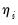
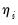
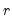
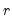

EViews offers various views and procedures for a estimated GLM equation. Some, like the or the coefficient view are self-explanatory. In this section, we offer relevant comment on the remaining views.
The views and allow you to examine properties of your residuals. The and , show the fit of the unweighted data. As the name suggests, the displays the standardized (scaled Pearson) residuals.
The show of the standardized residuals and of the standardized residuals and the squared standardized residuals.
The proc allows you to save the (response), (scaled Pearson), or (score) residuals into the workfile. The latter may be useful for constructing test statistics (note, however, that in some cases, it may be more useful to compute the gradients of the model directly using ).
Lastly, you should use to create a model object for more complicated simulation from your GLM equation.
You may perform Wald tests of coefficient restrictions. Simply select , then enter your restrictions in the edit field. For the Papke-Wooldridge example above with Huber-White robust covariances, we may use a Wald test to evaluate the joint significance of AGE^2 and SOLE by entering the restriction “C(5)=C(6)=0” and clicking on OK to perform the test.
The and views and the views are likelihood ratio based tests. Note that the RESET test is a special case of an omitted variables test where the omitted variables are powers of the fitted values from the original equation.
If  is estimated, we may also employ the F
is estimated, we may also employ the F-statistic variant of the test statistic:


 or the linear index .
or the linear index . likelihood ratio test statistic may be written in terms of the difference of deviances with common scaling,
likelihood ratio test statistic may be written in terms of the difference of deviances with common scaling,  , where
, where  is an estimate of the dispersion and  is the fixed number of restrictions imposed by the null hypothesis.
is an estimate of the dispersion and  is the fixed number of restrictions imposed by the null hypothesis.  is either a specified fixed value or an estimate under the alternative hypothesis using the specified dispersion method. When and contain the quasi-deviances, the resulting statistic is the quasi-likelihood ratio (QLR) statistic (Wooldridge, 1997).
is either a specified fixed value or an estimate under the alternative hypothesis using the specified dispersion method. When and contain the quasi-deviances, the resulting statistic is the quasi-likelihood ratio (QLR) statistic (Wooldridge, 1997). under the alternative hypothesis using the method specified in your equation.
under the alternative hypothesis using the method specified in your equation.